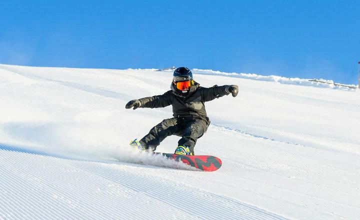
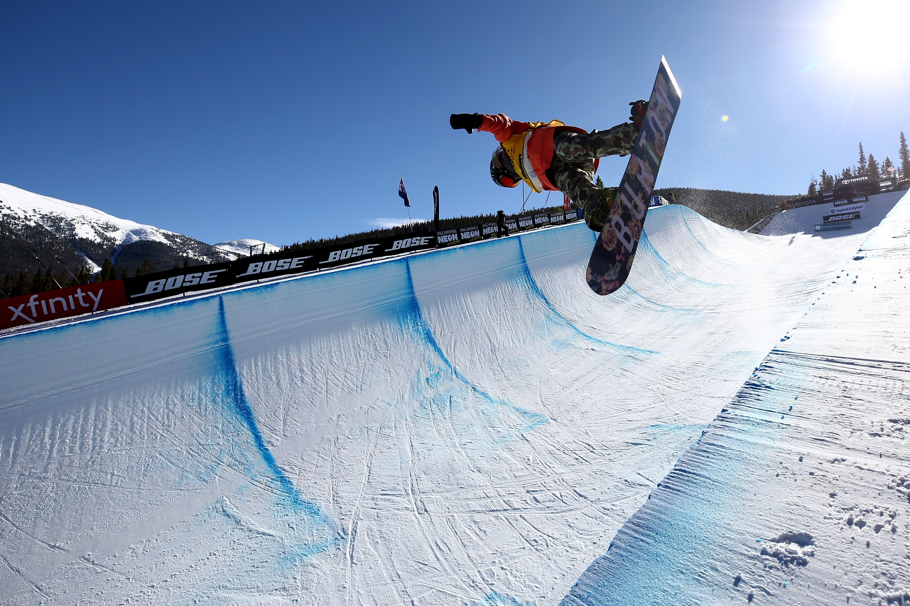
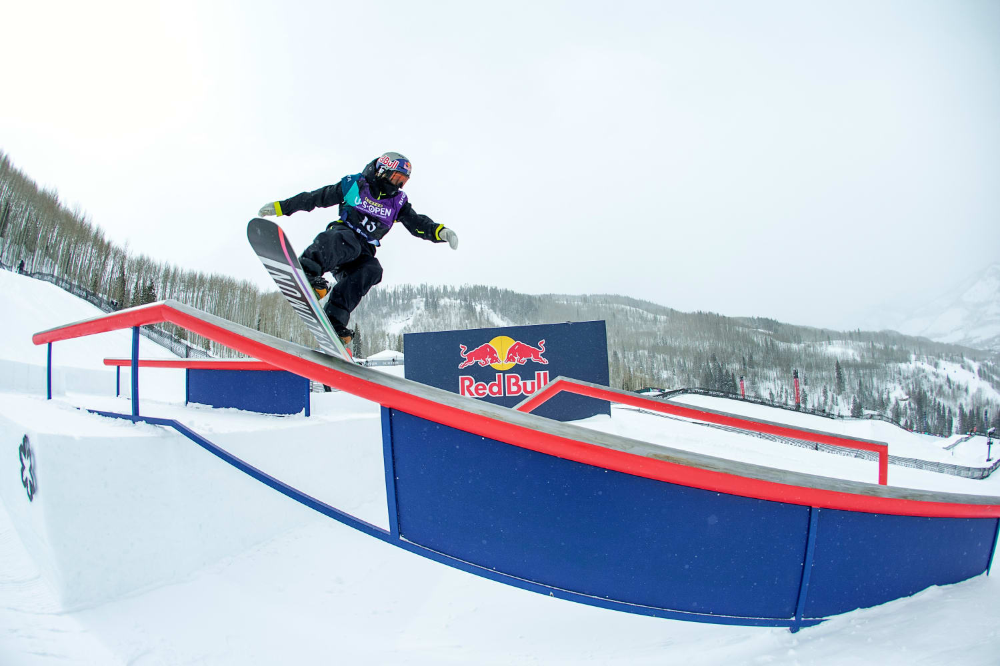

El snowboard es un deporte extremo de invierno, en el que se utiliza una tabla para deslizarse sobre
una pendiente cubierta por nieve. El equipo básico para practicarlo son la mencionada tabla, las fijaciones
y las botas. Se incorporó al programa de los Juegos Olímpicos de Invierno en 2015.

Se practica dentro de un medio tubo de nieve con paredes altas y verticales dispuesto en una pendiente de
desnivel medio y en la que los tablistas tratan de realizar todas las acrobacias posibles saltando más allá
de los bordes de este. Se complementa con el super half-pipe ("mediotubo gigante") que es de mayor anchura
entre muros, y con transición entre ellos más suave. Es una disciplina muy difícil y en la que se suelen utilizar
tablas y fijaciones muy duras y reactivas que permitan un control total. Esta modalidad es olímpica. Se construyen
los muros con accesorios muy caros para las máquinas pisa-pistas, por eso son tan escasos en lugares con poca
tradición freestyle.

Esta modalidad se practica en una pista en la que hay dispuestos varios módulos como saltos, barandillas y cajones
sobre los que el tablista trata de hacer en una bajada todos los trucos posibles. Es disciplina olímpica desde los
Juegos Olímpicos de Invierno 2014.

| Menú de navegación - pagina 2 | ||
| index | pagina 1 | pagina 3 |